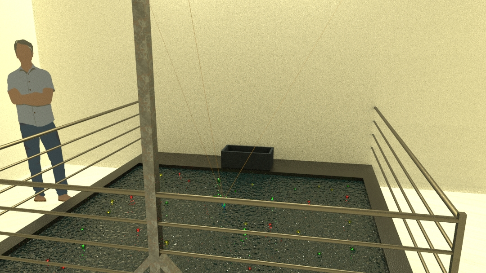

Como se mencionó previamente, la instalación tiene 2 etapas claramente diferenciadas. Una es la etapa de reposo, de paz, donde los objetos flotantes se encuentran en el agua sin ser perturbados por la maquinaria. Luego, viene la etapa del caos, donde se prenden las luces y la máquina comienza a depredar.
Vista General
Este es el modo por defecto de la instalación, en penumbras, los objetos se encuentran en el agua sin ser perturbados. Su vitalidad representada con una tenue luz vibratoria.
Vista general en reposo
Está a punto de comenzar la depredación, se prenden las luces buscando atraer a las presas.. En instantes la máquina comenzará su movimiento..
Vista general prevía a la depredación
Comenzó la masacre. La máquina introduce el anzuelo en el agua y comienza a pescar. En el momento que sus capturas salen del agua, sus luces se apagan.

Vista general en el momento de la depredación
La maquinaria ya cumplió su objetivo. Estas llevando a sus presas, sin vida, a un agujeró para ser recolectadas.
Vista general en el momento de la recolección
Una vez depositada la pesca, la máquina vuelve a un rincón y entra en modo de reposo. Las luces se apagan. Vuelve la paz.
Vista general en el momento en el que se vuelve al reposo
Elemementos
Anzuelo de la máquina.
Reflectos de alta potencia - Motores, Cables..
Barandas para limitar el contacto de los espectadores con el 'mar'